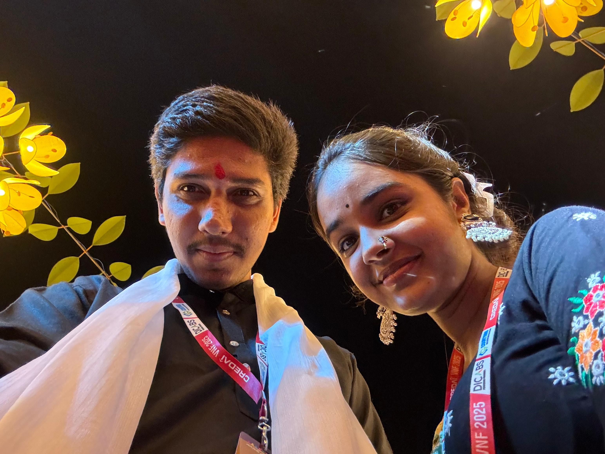

Happiest Birthday, Bakudi! ❤️
2018 → 2026
SOME STORIES NEVER REALLY LEAVE US
Was this friendship? Brother-sister? Lovers? Fiancée? Or something else?
I think we were just two unknowns who looked at each other, and not just our eyes, but our hearts, minds, and steps stopped right there.
Actually, this goes back to 2018, when I saw you for the first time in our village in Rajasthan.
To be honest, the moment I saw you in the village, everything went quiet. You looked straight into my eyes, and I thought, “Who is she? I have never seen such an apsara in the village before!”
That day, a bell rang in my heart, and I knew I had to talk to you. Within a few days, we started talking.
Whenever I talked to you, my heart rate would go up, and it felt so good inside. Having you around made me feel so energetic!
But God didn't like our happiness, because you came to Baroda, and our chats were left behind within the four walls of a room in the village.
No contact, no meetings, no recognition.
When I went to the village, you were in Baroda, and when you went, I was in Baroda. Our fate never supported us.
But God's will was that our incomplete story should step outside those four walls.
In 2020, we met again in the village at Kaka's house.
The happiness of that day had no limits — it felt like I had found a lost diamond!
I was so happy that God gave me one more chance to impress you.
During the 2020 lockdown, I put in so much effort to impress you. Remember how many games we used to play together, watch TV shows and songs, and a great vibe was set between us?
You could make me stand up or sit down with just a look of your eyes!
At that time, I even praised you, saying that your face expressions look so cute.
And even today, that face and those eyes make me go crazy over you. I don't know why, but my heart just gravitates toward your face.
As you got more and more impressed, the distance between us reduced.
We held hands while watching songs and shows, kissed and hugged whenever we wanted, and talked about risks — we were the ones taking risks in front of everyone!
After some time, you were completely impressed and fell in love with me.
Even today, when I think about it: Did we do the right thing that day? When you fell in love, did I feel love or was it just romance...?
In those days, both things felt the same to me. I always carried that guilt, and I have told you this many times.
After that, in 2021, 2022, and 2023, our talks happened, but it felt like it was mostly one-sided...
You put in all the efforts, and it didn't affect me at all.
You are truly so brave that you tolerated all of that and still stayed with me.
You knew that I only wanted romance, yet you gave it, and in return, your only wish was that I should talk to you with love.
What a selfish/harami person I was!
But whenever you talked about leaving, I swear the ground would slip from under my feet.
My head would start spinning, and I would get so restless thinking: “Will you leave me? Why, man?!”
And right then, so much love for you would fill my heart, and I would remember why I get so much tension whenever you talk about going away.
That Smile ❤️

Happiness Through A Screen
SMALL SCREEN • BIG HAPPINESS


How Am I Supposed To Forget You?


A Hand I Never Wanted To Leave


Beauty, Doubled


And Suddenly... Madam 😂

We Really Looked Good Together




Your Surprise Still Means A Lot


Please Don't Do This To Me 🥹


Keep Some Distance, Ho! 😂

Pinky Promise ❤️

Now How Am I Supposed To Stay Normal?


Happy Birthday Once Again, Bakudi ❤️
And before this little journey ends, I want to say one thing properly.
I am sorry for every mistake I made in these last 7–8 years — for the moments when I did not understand you, for the times when I did not give enough effort, and for every situation where my actions may have hurt you.
Thank you for always standing by me, even at times when I probably did not deserve that much patience from you.
Thank you for loving me in your own beautiful way — with an honesty, patience and attachment that I don't think anyone else could ever copy.
Whatever happened between us, whatever name our relationship had, and whatever happens in the future, you will always remain one of the most special people in my life.
I genuinely pray that you get everything you deserve — success, peace, happiness, good health, beautiful experiences, and people who value your heart.
And no matter how many birthdays come, please never lose that smile, that straightforward nature, that beautiful heart, and that crazy side which makes you uniquely you. ❤️🫶
Happiest Birthday once again, Babita. May this year be one of the most beautiful chapters of your life. 🎂✨❤️